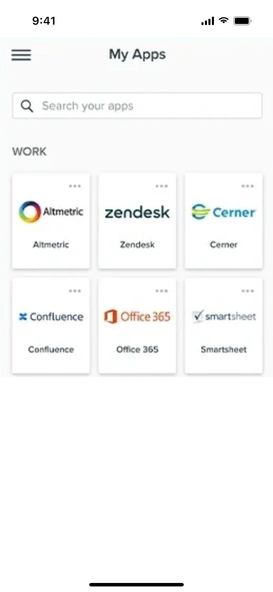

Okta · Enterprise · IAMRebuilding IAM for enterprise adminsA ground-up rebuild of the admin console, shipped under live tenants.Read case →

PayPal · Fintech · PrivacyPrivacy settings people can readData & Privacy settings rebuilt from card sorts and testing, launched to 80M+ people.Read case →

PayPal · Fintech · ConsentPrivacy-first ad personalizationAd data sharing moved from opted in by default to asking first.Read case →
PayPal · Fintech · GrowthA debit card people finish signing up forCard enrollment and cash back rebuilt inside the PayPal app.Read case →
Walmart Labs · Fintech · GrowthChase Pay inside Walmart PayBrought Chase Pay into Walmart Pay, validated with real customers in-store.Read case →